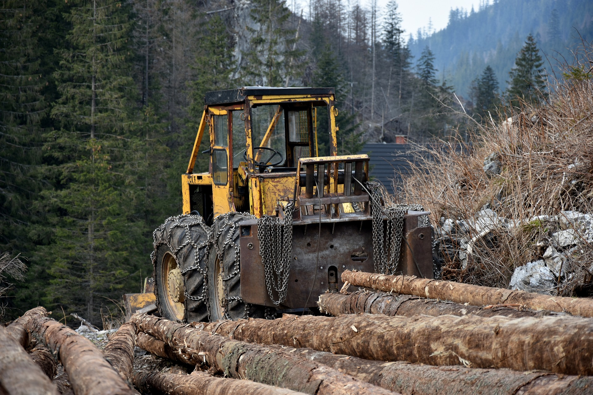
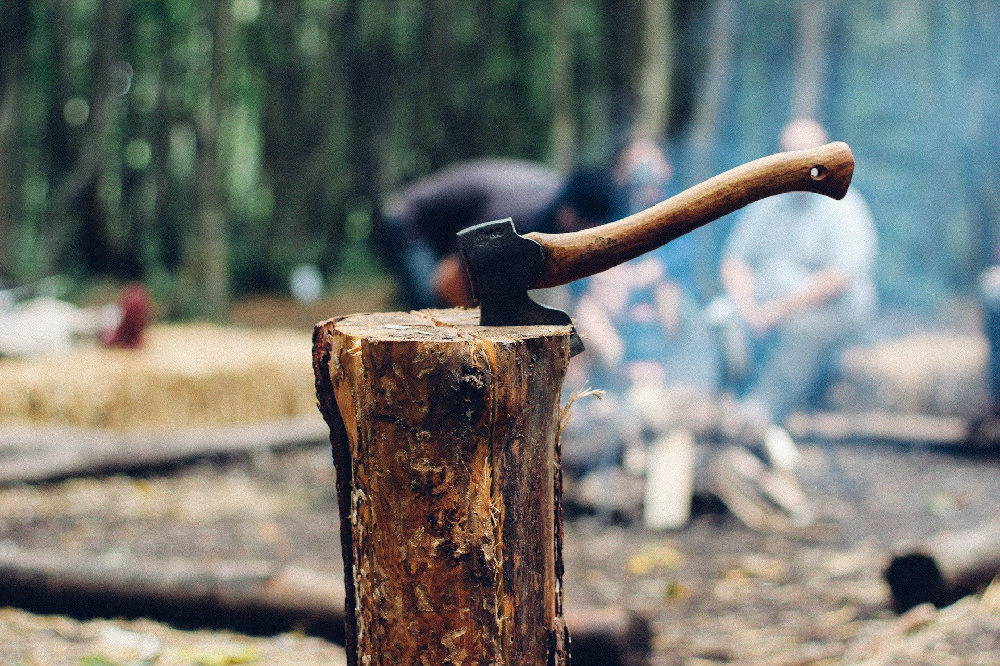
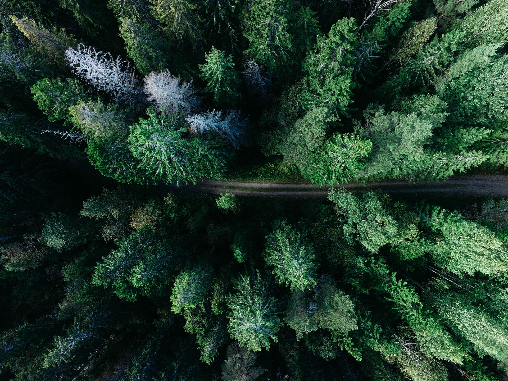

Just by visiting this site, you are supporting a part of the cause. If you want to find other ways to help, you can
1. Spread word to others on social media and push others to learn about deforestation
2. Sign petitions
3. Help attract the attention of local policymakers
4. Encourage the use of cleaner fuels
Below are some links to petitions that are fighting against deforestation to help you get started!
Petition Links!

The forests in Nigeria include extremely high rates of biodiversity. If we were to wipe out these forests, we would be wiping out the stability of our environment.
Let's save Nigeria's forests!

One of the major causes of deforestation is the desire for palm oil. If we work together to eliminate the use of palm oil and turn to cleaner energy, we can keep our environment clean!
Sign to campaign against the use of trees as fuel!

Proboscis monkeys heavily rely on the Borneo forest as their home and if the trees were to be destroyed for palm oil, it could lead to monkeys being killed. Let's prevent the Borneo forest from being logged to save the monkeys!
Click here to save the monkeys!

The Cameroon's Ebo Forest is critical to the biodiversity of species within Cameroon. We need to work together to rescue the forest from the logging industry!
Sign the Cameroon Forest Petition Here!
The forests in Nigeria include extremely high rates of biodiversity. If we were to wipe out these forests, we would be wiping out the stability of our environment.
Let's save Nigeria's forests!
One of the major causes of deforestation is the desire for palm oil. If we work together to eliminate the use of palm oil and turn to cleaner energy, we can keep our environment clean!
Sign to campaign against the use of trees as fuel!
Proboscis monkeys heavily rely on the Borneo forest as their home and if the trees were to be destroyed for palm oil, it could lead to monkeys being killed. Let's prevent the Borneo forest from being logged to save the monkeys!
Click here to save the monkeys!
The Cameroon's Ebo Forest is critical to the biodiversity of species within Cameroon. We need to work together to rescue the forest from the logging industry!
Sign the Cameroon Forest Petition Here!